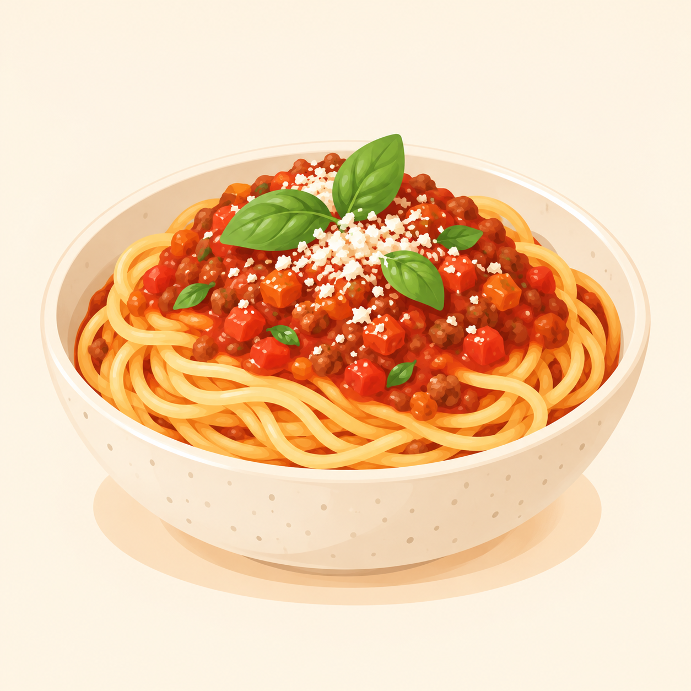

← Alle gerechten
Spaghetti met tomatensaus en gehakt
Gezinsvriendelijke spaghetti met tomaten, groenten en gehakt.

4 personen 30 minuten
Ingrediënten
- 400 g spaghetti
- 400 g gemengd gehakt
- 700 g passata
- 1 ui
- 2 wortelen
- 1 teentje knoflook
- 1 eetlepel olijfolie
- 1 theelepel Italiaanse kruiden
- peper en zout
- geraspte kaas (optioneel)
Bereiding
- Snipper de ui en knoflook en snijd de wortelen fijn.
- Verhit de olijfolie en bak de ui, knoflook en wortel ongeveer 5 minuten.
- Voeg het gehakt toe en bak het rul en gaar.
- Voeg de passata en kruiden toe. Laat 15 minuten zachtjes sudderen.
- Kook de spaghetti volgens de verpakking. Serveer met de saus en eventueel geraspte kaas.